압연기능사 (2016-04-02 기출문제)
1과목: 금속재료일반
1. 그림과 같은 결정격자의 금속 원소는?
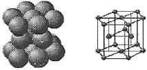
- Ni
- Mg
- Al
- Au
(정답률: 77%)

2. 다음 중 Ni-Cu 합금이 아닌 것은?
- 어드밴스
- 콘스탄탄
- 모넬메탈
- 니칼로이
(정답률: 53%)
3. 다음 중 주철에 관한 설명으로 틀린 것은?
- 비중은 C와 Si 등이 많을수록 작아진다.
- 용융점은 C와 Si등이 많을수록 낮아진다.
- 주철을 600℃ 이상의 온도에서 가열 및 냉각을 반복하면 부피가 감소한다.
- 투자율을 크게 하기 위해서는 화합 탄소를 적게 하고, 유리 탄소를 균일하게 분포시킨다.
(정답률: 66%)
4. 침탄법에 대한 설명으로 옳은 것은?
- 표면을 용융시켜 연화시키는 것이다.
- 망상 시멘타이트를 구상화시키는 방법이다.
- 강재의 표면에 아연을 피복시키는 방법이다.
- 강재의 표면에 탄소를 침투시켜 경화시키는 것이다.
(정답률: 91%)
5. 전해 인성 구리는 약 400℃ 이상의 온도에서 사용하지 않는 이유로 옳은 것은?
- 풀림취성을 발생시키기 때문이다.
- 수소취성을 발생시키기 때문이다.
- 고온취성을 발생시키기 때문이다.
- 상온취성을 발생시키기 때문이다.
(정답률: 61%)
6. 구상흑연주철은 주조성, 가공성 및 내마멸성이 우수하다. 이러한 구상흑연주철 제조시 구상화제로 첨가되는 원소로 옳은 것은?
- P, S
- O, N
- Pb, Zn
- Mg, Ca
(정답률: 67%)
7. Y 합금의 일종으로 Ti과 Cu를 0.2% 정도씩 첨가한 것으로 피스톤에 사용되는 것은?
- 두랄루민
- 코비탈륨
- 로엑스합금
- 하이드로날륨
(정답률: 66%)
8. 형상 기억 효과를 나타내는 합금이 일으키는 변태는?
- 펄라이트 변태
- 마텐자이트 변태
- 오스테나이트 변태
- 레데뷰라이트 변태
(정답률: 70%)
9. 다이캐스팅 주물품, 단조품 등의 재료로 사용되며 융점이 약 660℃이고, 비중이 약 2.7인 원소는?
- Sn
- Ag
- Al
- Mn
(정답률: 78%)
10. Fe-C 평형상태도에서 공정점의 C%는?
- 0.02%
- 0.8%
- 4.3%
- 6.67%
(정답률: 67%)
11. 금속의 소성변형을 일으키는 원인 중 원자밀도가 가장 큼 격자면에서 잘 일어나는 것은?
- 슬립
- 쌍정
- 전위
- 편석
(정답률: 67%)
12. 시험편을 눌러 구부리는 시험방법으로 굽힘에 대한 저항력을 조사하는 시험방법은?
- 충격시험
- 굽힘시험
- 전단시험
- 인장시험
(정답률: 92%)
13. 다음 중 가는 실선으로 긋는 선이 아닌 것은?
- 치수선
- 지시선
- 가상선
- 치수보조선
(정답률: 71%)
14. 3/8-16UNC-2A의 나사기호에서 2A가 의미하는 것은?
- 나사의 등급
- 나사의 호칭
- 나사산의 줄수
- 나사의 잠긴방향
(정답률: 79%)
15. 헐거운 끼워맞춤에서 구멍의 최소허용치수와 축의 최대허용치수와의 차는?
- 최소 죔새
- 최대 죔새
- 최소 틈새
- 최대 틈새
(정답률: 64%)
2과목: 금속제도
16. 그림에 표시된 도형은 어느 단면도에 해당하는가?
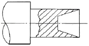
- 온 단면도
- 합성 단면도
- 계단 단면도
- 부분 단면도
(정답률: 72%)
17. 다음 보기에서 도면의 양식에 대한 설명으로 옳은 것을 모두 고른 것은?
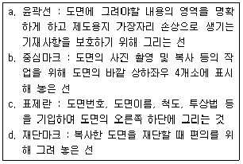
- a, c
- a, b, d
- b, a, d
- a, b, c, d
(정답률: 83%)
18. 대상물의 일부를 떼어낸 경계를 표시할 때 불규칙한 파형의 가는 실선 또는 지그재그선으로 나타내는 것은?
- 절단선
- 가상선
- 피치선
- 파단선
(정답률: 76%)
19. 기어의 모듈(m)을 나타내는 식으로 옳은 것은?
- 잇수/피치원의 지름
- 피치원의 지름/잇수
- 잇수+피치원의 지름
- 피치원의 지름-잇수
(정답률: 82%)
20. 도면에 대한 내용으로 가장 올바른 것은?
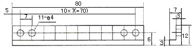
- 구멍수는 11개, 구멍의 깊이는 11mm이다.
- 구멍수는 4개, 구멍의 지름 치수는 11mm이다.
- 구멍수는 7개, 구멍의 피치간격 치수는 11mm이다.
- 구멍수는 11개, 구멍의 피치간격 치수는 7mm이다.
(정답률: 85%)
21. 기준치수가 50, 최대허용치수가 50.007, 최소허용치수가 49.982일 때 위치수허용차는?
- +0.025
- -0.018
- +0.007
- -0.025
(정답률: 59%)
22. 원을 등각투상도로 나타내면 어떤 모양이 되는가?
- 진원
- 타원
- 마름모
- 쌍곡선
(정답률: 84%)
23. 재료 기호 “STC1⑤"를 옳게 설명한 것은?
- 탄소함유량이 1.00~1.10%인 탄소 공구강
- 탄소함유량이 1.00~1.10%인 합금 공구강
- 인장강도가 100~110N/mm2인 탄소 공구강
- 인장강도가 100~110N/mm2인 합금 공구강
(정답률: 71%)
24. 15mm 드릴 구멍의 지시선을 도면에 옳게 나타낸 것은?
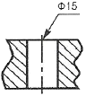
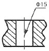
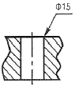
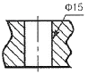
(정답률: 88%)
25. 로울의 직경이 340mm, 회전수 150rpm일 때 압연되는 재료의 출구 속도는 3.67m/sec이었다면 전진율은?
- 37%
- 40%
- 54%
- 70%
(정답률: 46%)
26. 워킹빔식 가열로에서 유압, 전동에 의해 움직이는 과정으로 옳은 것은?
- 상승→전진→하강→후퇴
- 상승→후퇴→하강→전진
- 하강→전진→상승→후퇴
- 하강→상승→후퇴→전진
(정답률: 87%)
27. 슬래브 15000톤을 처리하여 코일 13500톤을 생산했을 때 압연 실수율은 몇 %인가? (단, 재열재는 500톤이 발생하였고, 지열재는 소재량에 포함시키지 않는다.)
- 90.1%
- 93.1%
- 95.4%
- 98.4%
(정답률: 62%)
28. 작은 입자의 강철이나 그리드를 분사하여 스케일을 기계적으로 제거하는 작업은?
- 황산처리
- 염산처리
- 와이어 브러시
- 쇼트 블라스트
(정답률: 79%)
29. 공업용 로에 쓰이는 내화재료는 제게르 추 몇 번 이상이 사용되는가?
- KS14
- KS18
- KS22
- KS26
(정답률: 63%)
30. 압연시 Roll 및 강판에 압연유의 균일한 플레이트 아웃(전개 부착)을 위한 에멀션 특성으로 틀린 것은?
- 농도에 관계없이 부착유량은 증대한다.
- 점도가 높으면 부착유량이 증가한다.
- 사용수중 Cl- 이온은 유화를 불안정하게 한다.
- 토출압이 증가할수록 플레이트아웃성은 개선된다.
(정답률: 60%)
3과목: 압연기술
31. 맞물려 돌아가는 한쌍의 롤(Roll)사이에 금속재료를 넣어 단면적 혹은 두께를 감소시키는 금속가공법은?
- 압연
- 단조
- 인발
- 압출
(정답률: 86%)
32. 압연 중 압연 하중에 의해서 발생되는 롤 밴딩 현상은 스트립의 Profile에 큰 영향을 미친다. 스트립의 용도에 맞는 Profile을 관리하게 되는 데 Strip Profile과 관계가 먼 것은?
- roll 냉각수 header
- roll bender
- roll initial crown
- looper
(정답률: 71%)
33. 접촉각과 압하량의 관계를 바르게 나타낸 것은? (단, △h는 압하량, r은 롤의 반지름, α는 접촉각이다.)
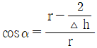
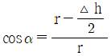
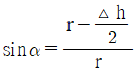
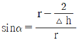
(정답률: 72%)
34. 강판결함검사 중 아래의 원인으로 발생하는 결함은?
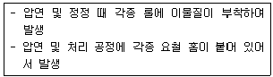
- roll mark
- reel mark
- scab
- blow hole
(정답률: 78%)
35. 냉간 압연강판의 정정 설비의 목적으로 틀린 것은?
- 분진 제거
- 잔류 압연류 제거
- 표면 산화막 제거
- 표면잔류 철분 제거
(정답률: 66%)
36. 압연기의 롤러 베어링에 그리스 윤활을 하려고 할 때 가장 좋은 급유 방법은?
- 손 급유법
- 충진 급유법
- 패드 급유법
- 나사 급유법
(정답률: 49%)
37. 다음 중 냉간 박판의 압연공정 순서로 옳은 것은?
- 표면청정→조질압연→산세→풀림→냉간압연→전단리코일링
- 표면청정→산세→냉간압연→풀림→조질압연→전단리코일링
- 산세→냉간압연→표면청정→풀림→조질압연→전단리코일링
- 산세→표면청정→냉간압연→조질압연→풀림→전단리코일링
(정답률: 70%)
38. 열연공장의 조압연 제어가 아닌 것은?(오류 신고가 접수된 문제입니다. 반드시 정답과 해설을 확인하시기 바랍니다.)
- 개도 설정 제어
- 가속율 설정 제어
- 로울 갭(roll gap) 설정 제어
- 디스케일링(descaling) 설정 제어
(정답률: 32%)
39. 냉간압연 작업롤에서 상부 롤이 하부 롤보다 클 때 압연 후 스트립의 방향은 어떻게 변하는가?
- 스트립은 상향한다.
- 스트립은 하향한다.
- 스트립은 flat 하다.
- 스트립에 camber가 발생한다.
(정답률: 74%)
40. 압연 속도(Rolling speed)가 마찰 계수와의 관계는?
- 속도와 마찰계수는 상관없다.
- 속도가 크면 마찰계수는 증가한다.
- 속도가 크면 마찰계수는 감소한다.
- 속도에 관계없이 마찰계수는 일정하다.
(정답률: 63%)
41. 냉간압연작업을 할 때 냉간압연유의 역할을 설명한 것으로 틀린 것은?
- 압연제의 표면성상을 향상시킨다.
- 부하가 증가되어 롤의 마모를 감소시킨다.
- 고속화를 가능하게 하여 압연능률을 향상시킨다.
- 압하량을 크게 하여 압연재를 효과적으로 얇게 한다.
(정답률: 57%)
42. 공형압연 설계시 고려할 사항이 아닌 것은?
- 열전단률
- 압연 토크
- 압연 하중
- 유효 롤 반지름
(정답률: 63%)
43. 풀림 공정에서 재결정에 의해 새로운 결정조직으로 변한 강판을 제압하 하여 냉간가공으로 재질을 개선하고 형상을 교정하는 것은?
- Temper color
- Power curve
- Deep drawing
- Skin pass
(정답률: 71%)
44. 냉간압연시 재결정 온도 이하에서 압연하는 목적이 아닌 것은?
- 압연동력이 감소된다.
- 균일한 성질을 얻고 결정립을 미세화 시킨다.
- 가공경화로 인하여 강도, 경도를 증가시킨다.
- 가공면이 아름답고 정밀한 모양으로 완성한다.
(정답률: 65%)
45. 압연작업시 압연재의 두께를 자동으로 제어하는 장치는?
- γ-ray
- x-ray
- SCC
- AGC
(정답률: 88%)
4과목: 압연설비
46. 예지 스캐브(edge scab)의 발생 원인이 아닌 것은?
- 슬래브 코머부 또는 측면에 발생한 크랙이 압연될 때
- 슬래브의 손질이 불완전하거나 스카핑이 불량할 때
- 슬래브 끝 부분 온도 강하로 압연 중 폭방향의 균일한 연신이 발생할 때
- 제강 중 불순물의 분리 부상이 부족하여 강중에 대형 불순물 또는 기포가 존재할 때
(정답률: 62%)
47. 공형압연설계에서 공형의 구성요건이 아닌 것은?
- 능률과 실수율이 낮을 것
- 롤에 국부마멸을 일으키지 않고 롤 수명이 길 것
- 압연할 때 재료의 흐름이 균일하고 작업이 쉬울 것
- 정해진 롤 강도, 압연 토크 및 롤 스페이스를 만족시킬 것
(정답률: 69%)
48. 비열이 0.9cal/gㆍ℃인 물질 100g을 20℃에서 910℃까지 높이는데 필요한 열량은 몇 kcal인가?
- 60.1kcal
- -60.1kcal
- 80.1kcal
- -80.1kcal
(정답률: 74%)
49. 신체적, 컨디션의 율동적인 발현, 즉 식욕, 소화력, 활동력, 스테미너 및 지구력과 밀접 생체리듬은?
- 심리적 리듬
- 감성적 리듬
- 지성적 리듬
- 육체적 리듬
(정답률: 89%)
50. 다음 윤활제 중 반고체 윤활제에 해당되는 것은?
- 흑연
- 지방유
- 그리스
- 경유
(정답률: 78%)
51. 다음 중 연속식 가열로가 아닌 것은?
- 배치식(Batch type)
- 푸셔식(Pusher type)
- 워킹빔식(Walking beam type)
- 회전로상식(Rotary hearth type)
(정답률: 60%)
52. 중후판 압연에서 롤을 교체하는 이유로 가장 거리가 먼 것은?
- 작업 롤의 마멸이 있는 경우
- 롤 표면의 거침이 있는 경우
- 귀갑상의 열균열이 발생한 경우
- 작업 소재의 재질 변경이 있는 경우
(정답률: 80%)
53. 가열로의 로압이 높을 때에 대한 설명으로 옳은 것은?
- 버너의 연소상태가 좋아진다.
- 방염에 의한 로체 주변의 철구조물이 손상된다.
- 개구부에서 방염에 의한 작업자의 위험도가 감소한다.
- 슬래브 장입구, 추출구에서는 방염에 의한 열손실이 감소한다.
(정답률: 58%)
54. 동일한 조업조건에서 냉간압연 롤의 가장 적합한 형상은?
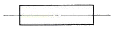
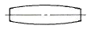
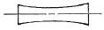
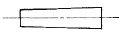
(정답률: 83%)
55. 조 압연기의 사이드 가이드(side guide)의 주 역할은?
- 소재의 스트립(strip)을 압연기에 유도
- 소재의 폭 결정
- 소재의 회전
- 소재의 장력 유지
(정답률: 70%)
56. 다음 중 작업롤이 갖추어야 할 특성에 해당되지 않는 것은?
- 취성
- 내마멸성
- 내충격성
- 내표면 균열성
(정답률: 83%)
57. 가역식 냉간 압연기의 부속 명칭이 아닌 것은?
- 코일 콘베이어
- 커버 캐리지
- 통판 테이블
- 벨트 루퍼
(정답률: 43%)
58. 무재해 운동의 3원칙 중 모든 잠재위험요인을 사전에 발견ㆍ해결ㆍ파악함으로서 근원적으로 산업재해를 없애는 원칙을 무엇이라 하는가?
- 대책선정의 원칙
- 무의 원칙
- 참가의 원칙
- 선취 해결의 원칙
(정답률: 73%)
59. 전동기로부터 피니언 또는 피니언과 롤을 연결하여 동력을 전달하는 것은?
- Body
- Neck
- Spindle
- Repeater
(정답률: 78%)
60. 윤활제 중 유지(fat and oil)의 주성분은?
- 지방산과 글리세린
- 파라핀과 나프탈렌
- 올레핀과 나트륨
- 붕산과 탄화수소
(정답률: 89%)